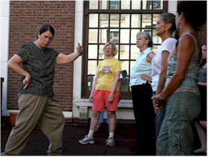
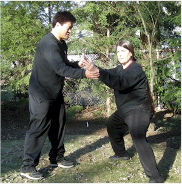
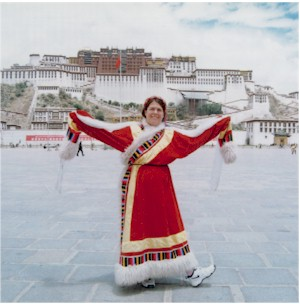
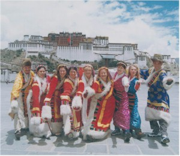

ABOUT Kathy Brenner's Tai Chi - Connecticut
Kathy Brenner is an Instructor of Tai Chi who has been an avid
practitioner of tai chi (aka taiji) and qigong (aka chi kung) since 1989. As can be seen
from her resume, she has a B.A. in experiential education and over 33 years of
professional experience as an informal educator developing and presenting environmental
education programs, hands-on science explorations and outdoor recreational skills to
persons of all ages. Kathy travels throughout southern New England conducting educational
seminars, semi-weekly classes, weekend workshops, speaking engagements and private lessons
to spread awareness of the benefits and techniques of Tai Chi and Qigong. Some past venues
include public libraries, hospitals, senior centers, physical therapy offices, schools,
youth camps, corporations, elder housing complexes, condo associations, recreation
centers, country clubs and private homes.
Mind - Body - Spirit
Tai Chi is an ancient Chinese system of health maintenance and
self-defense that employs a series of slow, relaxing movements in coordination with
breath, postural integration and mental imagery. It is often described as "moving
meditation".
Go to Kathy Brenner's HOME PAGE
|
Tai chi, what's in it for me? Are you looking to reduce stress, in a practical and
efficient way? Could your ability to concentrate, focus and recall details stand to be
sharpened? Would you like to lower your blood pressure or better manage your blood sugar
levels? Do you suffer from arthritis, fibromyalgia or chronic pain? Are you concerned
about preventing falls through improved balance, leg strength and coordination? Would you
like to find a way to calm down the running thoughts, get centered, rejuvenate your
emotional outlook and sleep better at night? A recent article in the New York Times was
headlined: "A downside to Tai Chi? None that I see." There are several medical
research studies confirming what practitioners have known for years.
Tai Chi is a Chinese internal martial art based upon the philosophy of the
complementary opposites of Yin and Yang. Qigong is one component of tai chi which General
Chen Wangting (9th generation of Chen Family) created about 350 years ago by combining
knowledge of qigong, doa yin (breath control), tui na (massage) and external fighting arts
into the art form of taiji chuan (translated as Supreme Ultimate Fist). So when one
practices tai chi one is automatically practicing qigong. The difference between qigong
and tai chi is that tai chi has two additional layers of complexity added: choreography of
a routine and the numerous self-defense applications of each form. While some teachers
choose to ignore the martial aspect of tai chi, Kathy finds it effective to refer to
application examples to help students spatially orient themselves within the structure of
a posture. An example is it is easier for one to perform the yang form "strum the
lute" accurately once it is demonstrated that one is trapping a person's arm above
and below the elbow than for the teacher to correct arms that are not held in alignment,
held too far apart, held too high or cross one another. Instead of correcting the various
ways one could mistakenly hold the hands in relation to one another, it is far better to
give students a memorable image that will anchor their position in space. Using
appropriate martial application examples makes learning more concrete. For tai chi to be
done properly it must follow sound structural, biomechanical and classical rules. It does
not matter for which purpose one does tai chi - meditation, health, competition or
self-defense - good tai chi form is evident by using good tai chi principles. As one of my
teachers Grandmaster Chen Zhenglei www.cstjq.com (19th generation Chen family) once said:
"First we did taiji for self-defense, then we invented gun powder, so now we just do
it for health." As with any art form practiced over time, there has been continual
expansion, innovation and differentiation of styles and training techniques.
Chronologically the Chen style is the root of tai chi and over time other family styles
have emerged such as the more popular in the west Yang style, Wu style, Wu Hao style and
the most recently created Sun style.
|
As a teacher Kathy is very adept at captivating audiences while meeting the needs of
individual participants. With graduate level coursework in Educational Psychology and a
published thesis on applying Competency Based Education to an outdoor adventure program
for youth, she utilizes a number of strategies to make each experience fun, relevant and
productive. As individual learners we process information in an individually preferred
combination of the visual, auditory and kinesthetic modes. In Kathy's programs you see the
movements being precisely modeled, while hearing specific instructions, to enable you to
experience the feeling of the forms. Printed materials are also utilized as appropriate to
help facilitate the learning process. Read what others say in testimonials from students,
host organizations and supervisors.
|
 |
"Nature's Qigong" is a program which Kathy developed in 2003 and was
originally piloted with preschool Head Start students. Since that time the routine has
rejuvenated all students who experience this joyful series of gentle forms from ages 3 to
98. Using visualizations and movements of various animals and aspects of nature to focus
one's mind, combined with natural breathing, this particular qigong routine is easy to
remember. While Nature's Qigong is based on traditional eastern exercises learned from
various teachers over a long period of time, it is very accessible as Kathy has renamed a
number of the movements to correspond better with our familiar western culture.
Participants can immediately participate with the qigong routine as there are is
sufficient repetition of each form and the order in which one does the numerous forms is
not important. Some of the benefits of qigong are stress reduction, increased
concentration, reduction of high blood pressure and a better night's sleep.
|
Kathy's philosophy is that while tai chi and qigong can sometimes be viewed as
esoteric, both are practical systems which with proper instruction can be demystified.
Correct body alignment and mechanics, coupled with relaxing muscular tension and opening
of the joints, are keys to building the foundation for the natural flow of qi (internal
energy). The value of having a qualified instructor be able to model and mold your
physical structure is critical so that you can reap the internal benefits of these arts.
One must have a clear understanding, a good teacher and diligent practice to go beyond the
stage of mere physical exercise into the development of gongfu. In Chinese medicine it is
believed that it is the blockage of qi which causes pain and disease. Qigong and tai chi
feel good, as well as, are good for you. The gentle, flowing movements relax the body,
focus the mind and calm the spirit. If the concept of qi puts you at odds with your
rational mind, let that part go, focus on your physical structure. Having begun her own
tai chi journey as a scientifically trained skeptic, Kathy frequently states that
"you don't need to believe in qi to let it work for you!"
|
The teachers which Kathy has been blessed to have studied with over the past 23 years
are of very high quality. During the first ten years of her training she was primarily
learning the Yang style forms of both mainland China and the 37 form of Taiwan immigrant
Cheng Manching. These early teachers include: David Chandler, Master Jou Tsung Hwa, David
Ritchie, Jian Jianye, William C.C. Chen and Dr. Yang Jwing Ming. Experiences with these
teachers nurtured a passion to better understand the philosophy, history and fundamental
principles of tai chi. In 1996 she began training with Baiqing Li's School of Tai Chi in
western Massachusetts and there more fully developed an understanding of proper body
structure, committed to a disciplined personal practice structure and forged life long
friendships with training peers. Under Baiqing and Mei Han Li's extended family
environment in addition to training, performing at cultural events and competing in
martial art tournaments Kathy undertook two cultural exchange trips with the Li's to China
and Tibet.
|
 |
"When the student is ready, the teacher will appear" is a traditional saying
that came true for Kathy in the fall of 1998. While at an international martial arts
tournament at which Grandmaster Chen Zhenglei was an honored judge, Baiqing Li persuaded
him to come to New England to teach a couple seminars on Chen style taiji. Grandmaster
Chen Zhenglei is one of the four tigers or taiji diamonds of taiji hailing from
Chenjiagou, the birthplace village of taiji. The following June both Grandmaster Chen
Zhenglei and his accompanying disciple Master Wang Hai Jun taught their first of many
subsequent seminars in MA. . Up to this point Kathy was primarily practicing and teaching
Yang style, competition, straight sword, broadsword and Dr Paul Lam's Sun style tai chi
for arthritis forms. Given the marvelous opportunity of being introduced to these high
level teachers, from 1999 forward Kathy began to devote the bulk of her personal practice
to learning the Chen style system of taiji. Grandmaster Chen Zhenglei is recognized by
China as one of five living cultural treasures, a ceremony he was unable to attend as at
that the moment he was having dinner with us and host C.P. Ong in the Washington, D.C.
area conducting a student seminar. In addition to training with Grandmaster Chen Zhenglei
when he visits Boston, MA on an annual basis, Kathy credits the bulk of her hands on
instruction and conceptual guidance to Master Wang Hai Jun with whom she trains
intensively with during his three yearly visits ranging between 12 and 18 days per year.
It is a privilege to study with such an outstanding human being with exceptional coaching
qualifications. Master Wang Hai Jun was sent to live with his teacher Grandmaster Chen
Zhenglei at the age of 11 years old and his ability to "eat bitter" (train hard)
is well known. He was China's National Champion in 1996, 1997 and 1998 in all three
categories of taiji form, push hands and taiji sword. Being a body art form taiji can be
transmitted from teacher to student without sharing a common spoken language, but Kathy is
very appreciative of the progressive mastery of the English language that Master Wang Hai
Jun has acquired since relocating to Manchester, England. Kathy's goal is to learn the
entire Chen Taiji training system as its riches have greatly deepened my understanding and
execution of all tai chi forms and qigong. To date in the Chen system she is well versed
in: qigong, 18 Essential form, Lao Jia Yi Lu (Old Frame First Routine), Lao Jia Er Lu (Old
Frame Second Routine) aka Pao Chui (Cannon Fist), 56 Competition form, Jian (straight
sword), Dao (broad sword), Guan Dao (Spring and Autumn Falchion) and the five stages of
Push Hands. She is working on improving her Shuang Dao (double broad swords) form and when
her teacher feels the time is right what remains to be learned in the Chen system is: long
pole, Xin Jia Yi Lu (New Frame First Routine), Xing Jia Er Lu (New Frame Second Routine)
and Spear known as the king of weapons. Another goal of Kathy's is to play tai chi in
every town in her home state of Connecticut to spread awareness of its beauty and
benefits. If you would like to host an introductory presentation, participatory qigong
session and tai chi performance contact her at kabtaichi@yahoo.com .
|
Traveling to China in 2000 with other students and family members of the School of Tai
Chi was organized in collaboration with the Beijing Sports Institute as a cultural
exchange program of west meets east tai chi enthusiasts. A welcome banquet was held where
groups from both continents demonstrated various contemporary tai chi forms and a
documentary filmed by China's CCTV in a secluded temple section of the Forbidden City. It
is quite an experience to view yourself spewing rapid Mandarin during the aired interviews
thanks to dubbing when your knowledge of the language was really confined to some basic
polite phrases and the names of tai chi forms. The group also spent plenty of time in the
parks, on the sidewalks in front of the apartment buildings and in the hutongs playing tai
chi with the locals. Together we did 24 form simplified Yang style, 42 competition form of
combined styles created in 1990 for the Asian Games, 48 old competition form of combined
styles created in 1976, 32 combined style sword, 42 combined style competition sword,
mulan fan, double mulan fans and the newly created tai chi kung fu fan designed to impress
the Olympic Committee in Beijing's bid for the 2008 Olympics. In addition to the tai chi
cultural exchange program small segments of the group undertook home visits with Beijing
residents and toured cultural sites in the regions of Beijing, Xian, Guilin and Shanghai.
In 2002 Kathy returned to China with the Li family further exploring the environs of
Beijing, land marks of Sichuan Province (such as Emei Mountain, Leishan Buddha and the
Three Gorges of the Li River), Tibet autonomous region between Lhasa and Xigaze, and Hong
Kong. In less than two years the economic prosperity and cultural shift to expounding upon
consumerism of the country was palpable.
|

Forbidden City - Tibet

|
Go to
Kathy Brenneer's HOME PAGE |